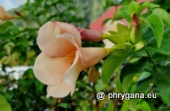

Kuntze, 1891")
")
| Phrygana: la Nature en Crète principalement, mais aussi d'ailleurs ... |
|  |
|
|
| Allamanda blanchetii | Curculigo capitulata | Marpissa muscosa |
| Espèces: 1456--- Faune: 565 -- Flora: 865 -- Galles (Bacteria): 2 -- Champignons: 23 -- Lichens: 1 | |||||
| Nouveautés | |||||
| Flora: | Solidago gigantea | Flora: | Agave fourcroydes | Flora: | Ammophila arenaria |
| Fauna: | Vanellus miles | Flora: | Asystasia gangetica | Flora: | Passiflora vitifolia |
| Flora: | Talinum fruticosum | Flora: | Salix alba | Fauna: | Rabdophaga rosaria |
| 16 novembre 2023 |